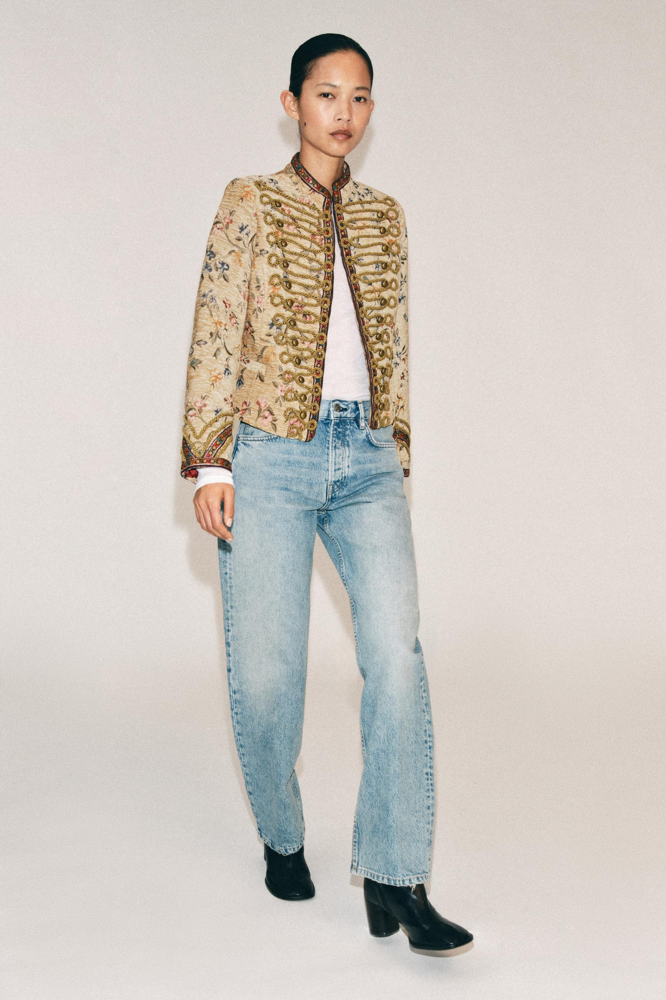
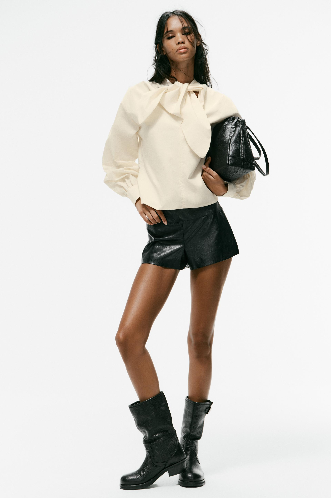
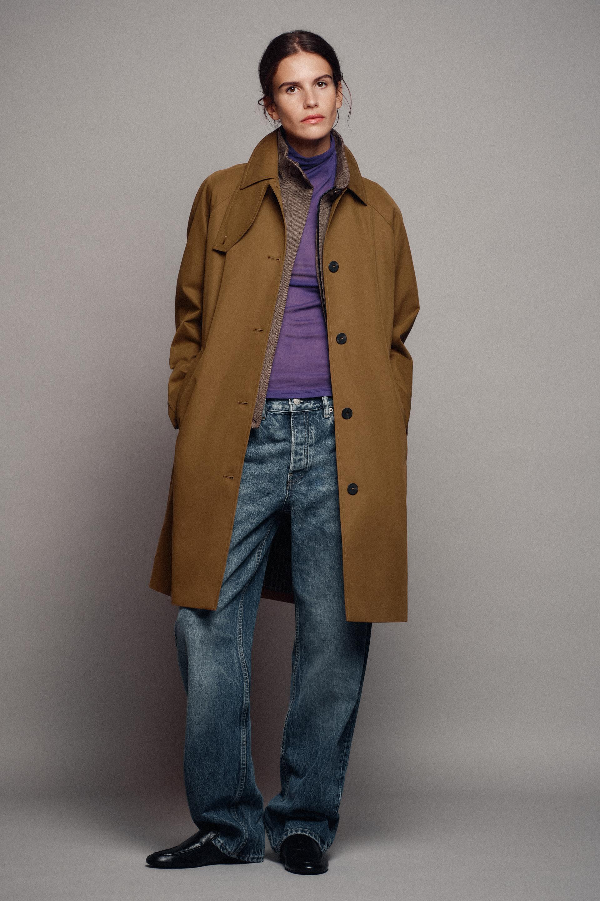
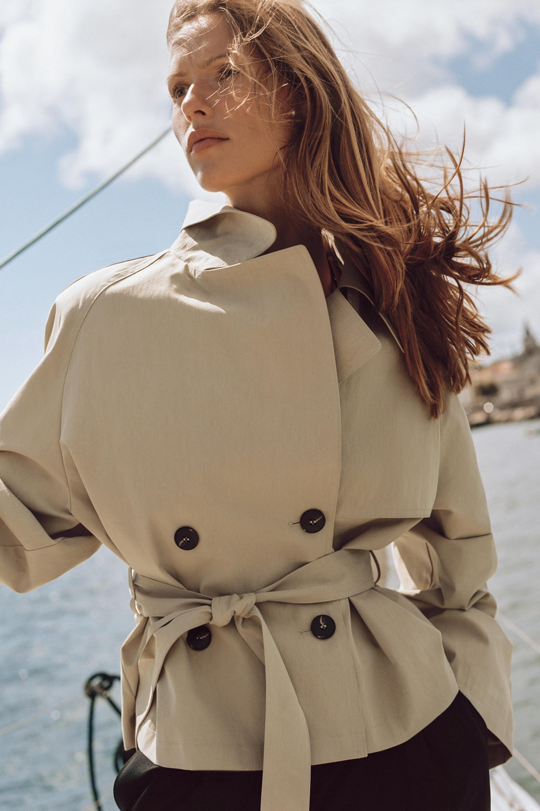
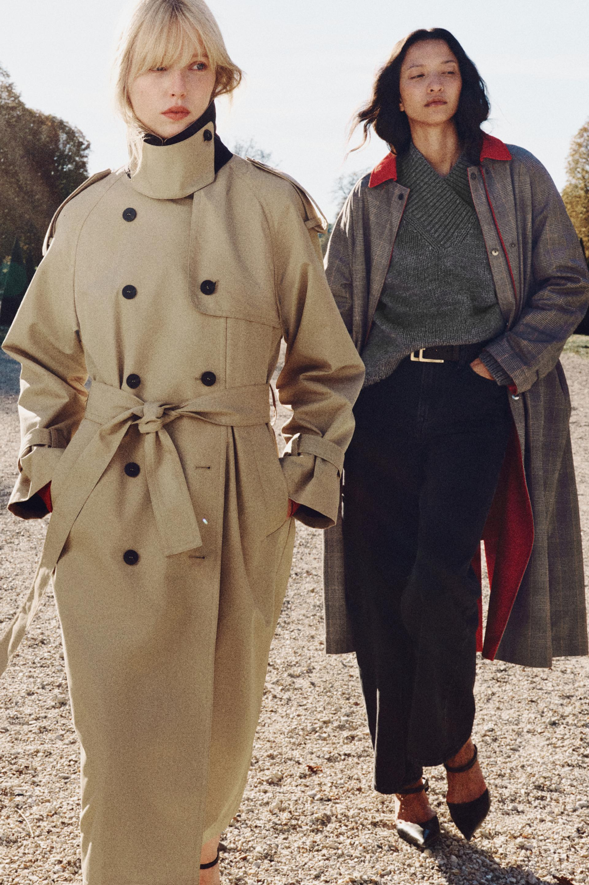
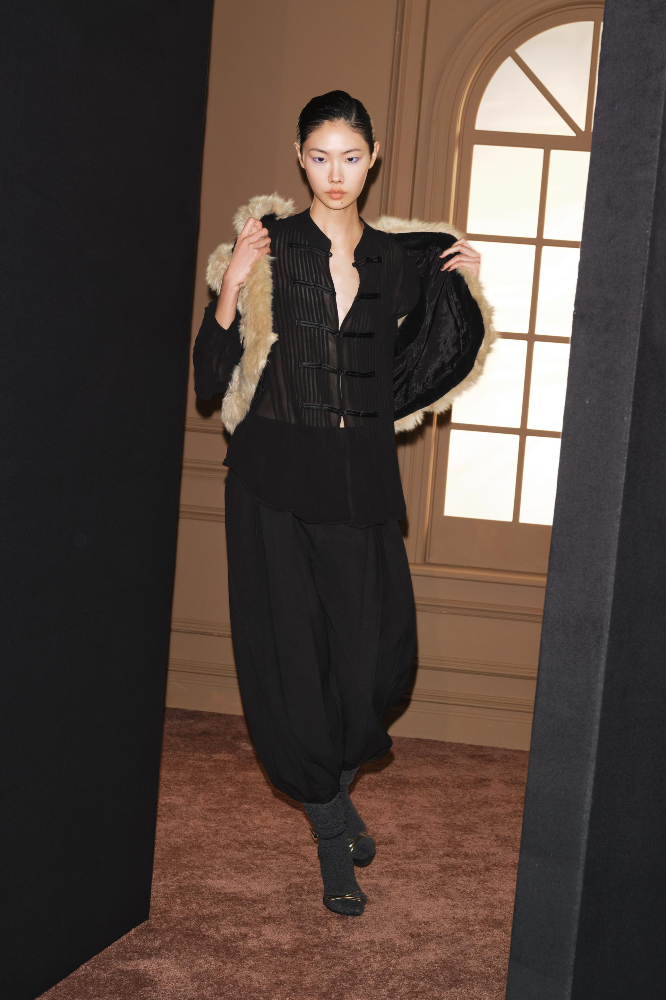

一套衣服在照片里好看，真正吸引人的可能有好几部分：外套的装饰、上下装的比例、模特站立的姿态，以及服装与灯光、背景形成的关系。准备借鉴时，需要先分清自己喜欢其中哪一部分，才能判断它能否进入自己的生活。
“适合自己”也需要具体说明。它可以指衣服与身体的实际配合，可以指某个场合的着装要求，也可以指希望通过穿着呈现的形象。说一件衣服适合“有气质的人”，既没有解释衣服的作用，也没有提供可用的判断方法。
以下借六幅 ZARA 图片，观察装饰如何分配、身体比例怎样被衣服组织，以及拍摄环境提供了哪些额外条件。先找到照片里真正吸引自己的关系，再判断如何把它带入已有衣物与日常活动。
一、先把“想穿成什么样”说清楚
“有气质”“高级”“时尚”往往包含不同期待。有人希望衣服让自己更醒目，有人希望显得严整，也有人希望保留松开的轮廓，减少拘束感。同样说“好看”，想得到的结果未必相同。
可以先将这种期待转成可见的问题：希望别人先看到衣服的装饰，还是先注意整个人？想要清楚、收束的轮廓，还是宽松、连续的线条？一套衣服里，准备让多少处细节同时引起注意？
这些问题讨论的是视觉效果，并不据此判断人的性格。内向的人也可能喜欢装饰鲜明的外套；有人在工作中希望穿得简洁，聚会时则希望更突出。穿着可以随目的和场合改变，不必成为一份固定的身份声明。
二、刺绣外套：决定让多少装饰进入画面

图1：ZARA ZW COLLECTION 刺绣绳扣外套与浅蓝牛仔裤的组合 来源：ZARA 官方商品页。
图1的装饰不仅来自金色绳扣。浅色衣身上还有花卉纹样，领口、门襟与袖口边缘又形成较深的线，胸前横向排列的绳饰把这些变化组织在一起。较短的下摆，让密集细节集中在上半身。
如果被这张图吸引，可以先判断自己喜欢的是哪一层：花卉带来的颜色变化，绳饰重复的秩序，还是短上衣与长裤的比例。喜欢一张完整照片，不等于每种装饰都需要照搬；确定最重要的一项，更容易找到适合已有衣橱的选择。
照片本身提供了一种搭配关系：白色内搭保持较连续的面积，浅蓝牛仔裤没有重复花卉与金色绳饰，黑色鞋在脚部收尾。下半身仍有褶皱和裤脚变化，但没有让所有位置都出现同样密集的图案。繁复与相对平稳的部分共同存在，外套才保留了明确的位置。
假设再加入大项链、装饰腰带和印花裤，画面会出现更多需要观看的地方；假设换成连续的深色长裤，上半身与下半身的明暗关系又会改变。这些是可以试穿的替换方向，照片没有展示同款对照，不能预先保证哪一种更适合。
场景判断还应继续往下走。如果活动有制服或明确着装要求，要先核对是否允许；需要长时间伏案、抬手或背包，则要检查领口、肩部与绳饰是否妨碍动作。立领与装饰在画面中清楚，不意味着每个人都愿意接受它们与身体接触的方式。
购买前还可以问：脱下外套后，里面这套衣服是否仍能满足当天安排？如果每天需要反复穿脱，装饰集中在一件外套上可能容易调整；如果希望室内也维持类似效果，就需要另外判断内搭。这里的“适合”包含使用过程，不只是出门前的一张照片。
三、蝴蝶结衬衫：不同部分，可以承担不同的正式程度

图2：ZARA 府绸系带衬衫造型，领口蝴蝶结与黑色下装、靴子形成对照 来源：ZARA 官方商品页。
图2把浅色集中在上半身。宽大的领口蝴蝶结、袖子和衣身构成一块连续的亮色，黑色短裤、包和靴子则分布在腰下、身体一侧与脚部。衬衫没有通过大量细碎纹样吸引注意，而是依靠蝴蝶结的尺度与浅色面积。
这套衣服没有让每一件单品都沿同一种正式程度展开。领口有装饰性很强的结，短裤留下大段腿部，靴子又形成较厚重、包覆完整的下部轮廓。若只把衬衫理解为“适合正式场合”，就会遗漏它在具体组合中已经发生的变化。
观察重点也可以更具体：包靠近上身，把一块深色面积放在浅色衬衫旁；短裤与衬衫交界处比较清楚；腿部露肤将短裤与靴筒分开。浅色上衣、黑色配件和露出的皮肤共同安排比例，而不是一件衬衫独自完成“气质”。
但照片不能替代场合要求。工作环境是否允许短裤，天气是否适合露腿，是否需要久站或走路，都可能改变选择。喜欢领口的尺度，可以尝试搭配已有长裤；喜欢黑白面积关系，也可以不保留完全相同的靴子。改动之后，应重新看整套组合。
换一双鞋，比例为什么也可能改变
图2的靴筒占据了一段小腿，鞋本身又是深色，脚部因此有明确的分量。如果换成露脚背的浅口鞋，同一套短裤下方会露出更多皮肤；换成浅色运动鞋，则会在画面底部增加亮色。变化不只是“正式”与“休闲”两个词，还包括深色面积在哪里结束。
鞋的体积也要与上衣比较。蝴蝶结和袖子已经形成较大的上身面积，换成更纤细或更厚重的鞋，视觉重心可能跟着改变。比较时可以保持上衣与短裤不动，只换鞋，判断自己想让上下两端相互呼应，还是希望其中一端更轻。
长裤有另一套限制：裤脚是否拖地、盖住多少鞋面、行走时是否被踩到，都与实际鞋底及鞋跟高度有关。不能只因为另一张照片的裤腿很长，就认为自己的裤子也应该落在同一位置。
不照搬模特身高，检查衣服落在身体哪里
同一件短上衣换到不同身高和身形上，衣摆可能落在裤腰之上，也可能覆盖更多臀部；同一条短裤露出的腿部长度也会改变。需要重新判断的是衣摆、裤腰、裤脚和靴筒的位置，不是根据身高差直接推导“能穿”或“不能穿”。
如果自己穿着后蝴蝶结挡住更多颈部，或衣身在腰侧大量堆积，原图的关系就已经变化。可以调整结的大小、袖口与下摆的处理，逐项比较。不同目标没有统一顺序：希望颈部更开放，与希望保留完整的大结，本来就是不同选择。
试穿时把用于摆姿势的手放下，自然站立，看正面，也看侧面和背面，再走动、坐下。这样能检查包和手臂移开后，衣身是否仍是自己希望的轮廓。自己拍照时尽量保持镜头高度、距离与站姿接近，否则比例变化可能来自拍摄方式。
四、长外套与短外套：比较衣服怎样组织身体

图3：ZARA ZW COLLECTION 中长风衣造型 来源：ZARA 官方商品页。
图3中，深驼色外套向两侧展开，紫色高领上衣在中间形成较集中的色块，灰褐色内层又在领口和门襟之间增加一层。蓝色牛仔裤从腰部向下延伸，裤脚在鞋面上有明显堆积。
敞开的外层并不等于全身没有位置。内搭下摆与牛仔裤的交界仍标出腰部，外套门襟则在两侧留下纵向线条。如果喜欢的是这种“外层较长、内部有分界”的关系，可以先在已有衣服中尝试，不必同时复制所有颜色和单品。
画面中的裤脚值得单独检查。它在照片里形成连续、较松的下部轮廓，实际穿着却需要核对行走时会不会踩到、遇水是否容易弄湿，以及换鞋后落点是否改变。照片让人看见一种长度效果，不能代替实际步行。
需要频繁通勤、上下车或背包时，还应检查外套长度、肩背余量与室内穿脱。商品被称为风衣，并不意味着它自动具备防水性能，具体天气适应性要另看商品说明与实物表现。

图4：ZARA 带垫肩与腰带的短风衣外套。此图用于观察肩、腰和下摆，不用于判断完整鞋裤比例 来源：ZARA 官方商品页。
图4将风衣的领口、双排扣与腰带集中到更短的衣身上。腰带把中间收束，肩部与袖子保留较大体积，衣摆在腰下再次展开。与图3的中长外层相比，视觉变化更多发生在肩、腰与短下摆之间。
两张图不能证明“收腰一定比敞开好看”。它们是不同款式、不同取景与不同姿态，图4甚至没有展示完整下装。能够比较的是上衣怎样分配体积，不能据此判断两套穿着的整体腿长、鞋裤关系或实际修身效果。
借鉴图3，可以先观察外套敞开后内搭是否连贯；借鉴图4，可以看系腰带后两侧衣料是否在自己身体上形成希望的形状。一次只改少数部分，才容易知道变化来自腰带、长度，还是肩部本身。
落实到生活，还应考虑结的位置和反复穿脱。一天多次进入室内，系结、收纳与携带都会成为实际步骤；大部分时间坐着，就需要看结点是否顶在身体前方、衣摆是否堆积。愿意为某种效果付出多少整理时间，也是“适合”的组成部分。
五、摄影环境：衣服之外，画面还增加了什么

图5：ZARA 长款双排扣风衣商品页中的户外画面。前后人物的服装与距离共同参与呈现 来源：ZARA 官方商品页。
图5的前景风衣颜色明亮、面积较大，人物也更靠近镜头。后方人物的格纹外套与灰色针织形成较深、较细密的区域，前后位置进一步拉开了两套衣服。衣服的吸引力因此同时受到颜色、取景和人物距离影响。
浅驼色风衣的领口竖起，颈部被较高的边缘包围，腰带在中间形成结；户外光线照亮衣面，也让头发、背景和面部产生明暗差别。若只购买其中一件衣服，却期待自动得到相同的身形与气氛，就把服装需要承担的任务估计得过多。
这张图也不能用来证明所有人的风衣都应该竖领或紧系腰带。日常戴围巾、背包，或改在普通室内观看时，领口空间、肩背轮廓与颜色感受都可能改变。可以借鉴领口与腰部的组织方式，实际效果仍需回到自己的动作和环境。

图6：ZARA ZW COLLECTION 绳扣衬衫造型，服装、打开外层的动作与室内场景共同形成画面 来源：ZARA 官方商品页。
图6换成更集中的室内画面。黑色衬衫、宽裤和深色外层构成连续的深色区域，浅色绒边沿肩部与身体两侧画出边界。胸前横向绳扣与竖向纹理，则在黑色内部提供较细的变化。
人物把外层打开，手臂和衣服向两侧延伸，使内搭得到展示；身后门窗与墙面提供明暗和形状，画面还采用了倾斜取景。这个动作不是衣服自然垂落时的常态，观看者看到的是服装与一次明确摆姿共同产生的结果。
如果喜欢的是黑色中细微的层次，可以研究纹理、光泽与扣结；如果喜欢的是绒边在暗色中形成的轮廓，可以观察浅色出现在哪里；如果喜欢的是整幅场景的戏剧感，就还需要承认动作、光线和取景的作用。三种兴趣可以同时存在，不应全部归给“这件衬衫显气质”。
同样，不能仅凭成片确定具体灯具、镜头或后期方法。照片中的明暗与颜色，是该次观看条件下的呈现；换到平常的房间，黑色之间可能更难分开。试穿时不妨在自己经常出现的光线下观察，看看没有打开外层、没有特定站姿时，仍喜欢哪些部分。
可以将喜欢的照片写成两列：一列是衣服能够保留的关系，例如装饰与连续面积、长外层与内部腰线、深浅配色；另一列是依赖拍摄条件的部分，例如前后人物距离、开衣动作与倾斜取景。有些图适合借鉴穿搭，有些图更适合作为摄影参考，也有些只需欣赏，不必转成购买计划。
六、怎样把“适合”变成可以检查的问题
前面几幅图不能组成一张“什么人应该穿什么”的名单，但可以帮助建立判断次序。
首先，说清楚自己喜欢什么。尽量落到一个具体关系上，例如“短外套的装饰集中在胸前”“敞开的外套里面仍能看到腰部位置”“深色衣服之间保留了纹理差别”。这样即使换了品牌或单品，也能继续寻找相似的作用。
其次，列出真实使用条件。准备在什么地方穿，是否有着装规则，要走多远、坐多久，是否需要抬手、搬东西或频繁穿脱？再考虑已有衣物、预算和护理条件。资源会限制选择，但这些限制不等于个人品味的高低。
然后，区分哪些是希望保留的特点，哪些可以调整。一次只改动少数部分，比较起来更清楚。例如，保持上衣与裤装不变，比较两双鞋；保留装饰外套，看看减少配饰后是否更接近希望呈现的形象。这些比较不需要先接受一套统一的“高级感”标准。
最后，把静止画面放回活动中的身体。试穿时看正面，也看侧面和背面；站立之后走动、坐下，再检查衣服能否维持自己愿意接受的状态。有些衣服在某个姿势下很好看，却需要不断整理，是否接受这种代价，取决于穿着目的。
“适合自己”不要求每个人穿得相似。它要求判断更具体：知道自己希望呈现什么，知道衣服和摄影怎样参与这个效果，也知道在真实条件下需要保留、改变或放弃什么。
欣赏一套造型，可以先承认它在照片里成立；决定如何使用它，则需要多走一步，把画面中的关系转成自己的选择。
资料说明
本文六幅图片均重新选自 ZARA 对应官方商品页，具体来源列于图旁。图3、图4为不同服装与拍摄条件，不是同款实验；图4未展示完整下装，分析仅限可见部分。搭配替换属于条件性分析，未进行实物试穿、身体测量或性能测试。资料核对：2026年11月4日。商品页可能更新或下架，不引用现价与库存。图片用于对应服装和视觉关系分析，版权归原权利人。
留言
由 Disqus 提供。